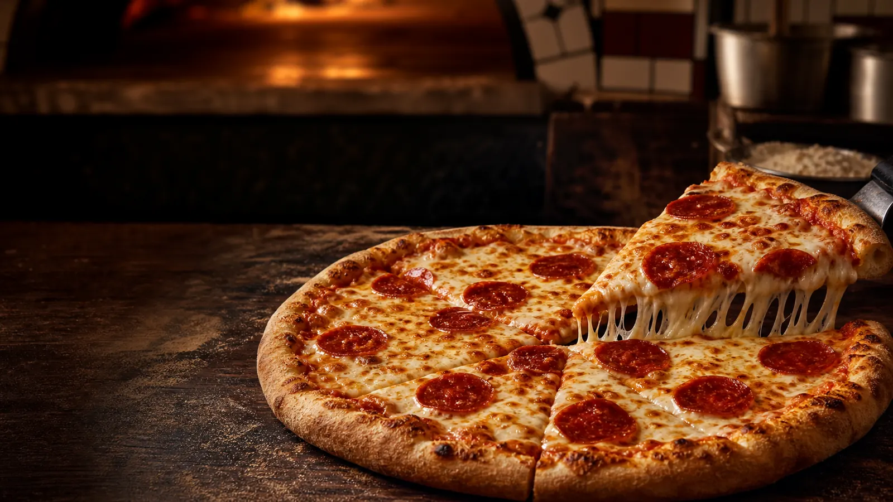
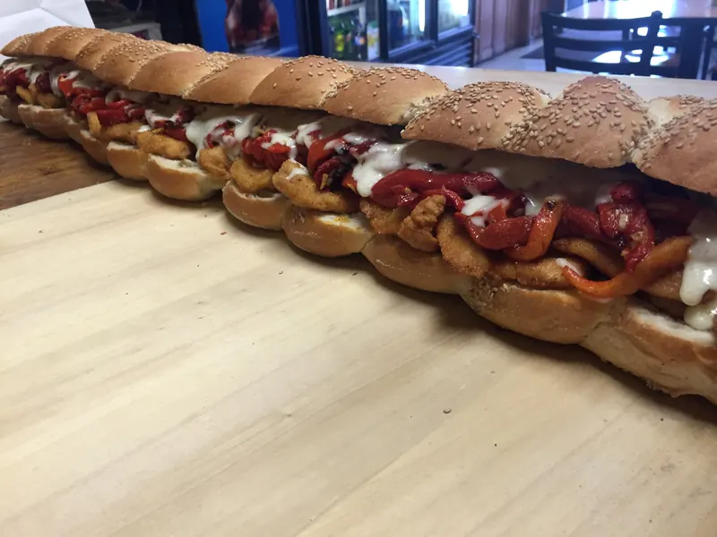
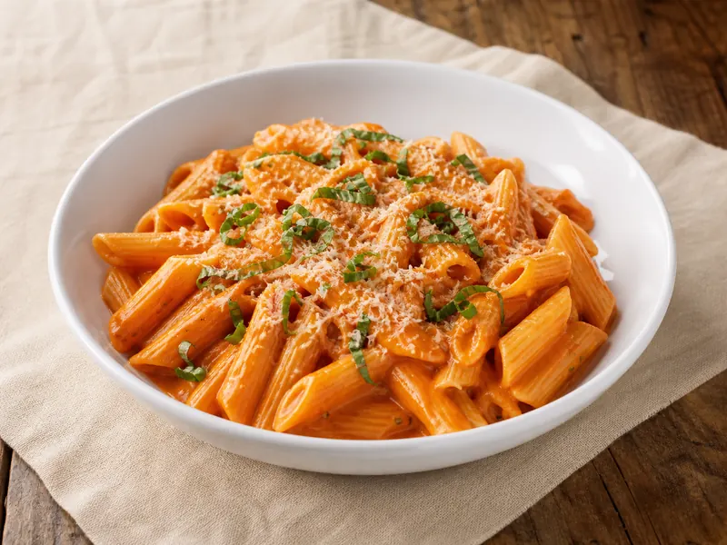

Tina's Special
A house specialty pizza built for the whole table.

Family owned in Chester, New York
Pizza, Italian dinners and grandma's recipes — served with the same family spirit for over 35 years.
More than a pizza stop
For more than three decades, Tina's has been the place for a quick slice, a full Italian dinner or a table covered in trays for a family party. The recipes are homemade. The welcome is uncomplicated.
Plan your visit →From the kitchen


When to stop by
Delivery begins at 5pm when available. Call ahead to confirm.
Ready to eat?
Takeout, delivery when available, and catering for gatherings large or small.
Choose your favorites